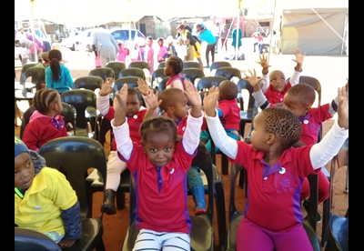

Here at Chubby Chums, we're all about seeing kids smile again!
Chubby Chums is a Child Protection Organization. Chubby Chums was established in 1999 to help address the needs of the many children left destitute by poverty, disease and abuse. What was started as a two-man operation (by Tony Barnard and Martin Graham, who sadly to say, has passed on due to cancer), working out of an enclosed verandah has grown to incorporate 36 Children’s Homes, we now have three Directors, Founder Director, Financial Director, Director and Deputy Director, with their transparent and open approach to all they do, even Government Departments are opening their doors and, more importantly, their purse strings for the Children.

The Organization was registered as a Section 21 Corporation in 2000. We are also registered as a Non-Profit Organization (NPO), Non-Government Organization (NGO), and Public Benefit Organization (PBO) and have a Tax Exemption Number. We have since been issued with a Health Certificate we are now registered with Cypro with the new section laws.
The Chubby Chums organization was originally founded to assist poverty-stricken children in need, children suffering from illness and disease, and children in abusive households. Chubby Chums now works in partnership with Child Protection Units and Child Treatment Services to stop child abuse, child neglect, child exploitation, and to promote the importance of ECD. Chubby Chums primarily operates in Johannesburg and the Far East Rand Regions.
Get Involved
You can donate to support Chubby Chums, report a concern about a child, or contact our team to find out more.